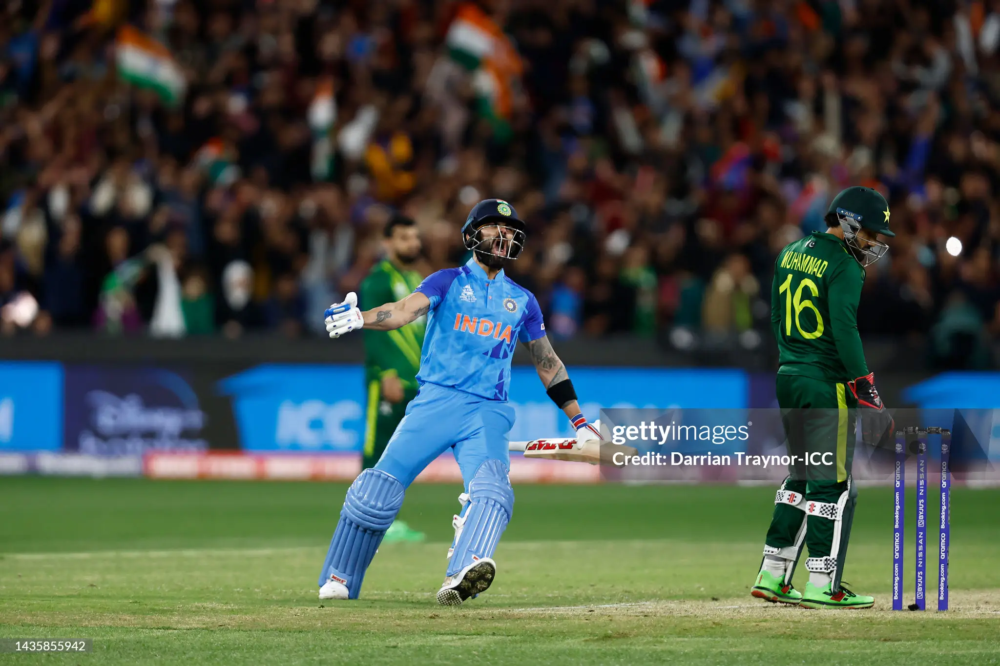

VIRAT KOHLI vs PAKISTAN
“The night Melbourne stopped breathing.”
THE MOMENT
The required run rate was spiraling into fantasy. India was reduced to embers.
Chasing 160 against a ferocious Pakistani pace attack, India lay in ruins at 31 for 4. The MCG had gone cold under the Victorian chill. What followed was not merely a cricket innings—it was a masterclass in mathematical composure, unwavering belief, and transcendental willpower.
Absorbing the tempest. Pitching anchor alongside Hardik Pandya. Denying Pakistan the final fatal blow while running tirelessly between wickets.
Calculating the arithmetic. Shifting gears into controlled assault against spin, picking gaps in the vast expanse of the southern hemisphere turf.
Haris Rauf bowling with venom at 145 kph. Wickets hanging by a thread. Standard win probability models sank beneath four percent. The arithmetic was deemed impossible.
The physics-defying back-foot straight loft over the bowler's head into the sightscreen, followed by an improvised flick over fine leg. Melbourne lost its collective sanity.
The emotional release. Looking up to the night sky, tears breaking through the warrior's facade, punching the turf in solitary catharsis.
THE MEMORY
“Some innings belong to records, but 82* belongs to folklore. It redefined the boundary between athletic execution and spiritual belief. Decades from now, when cricket lovers speak of the cauldron of the Melbourne Cricket Ground under floodlights, they will not speak of statistics—they will remember where they stood when Virat Kohli stared down destiny and won.”
MORE INNINGS
Explore other defining chapters from the chronicle of athletic transcendence.
149 vs ENGLAND
The solitary fortress against swinging English skies, conquering previous demons ball by ball.
254* vs SOUTH AFRICA
A masterclass in merciless endurance, accumulating boundaries with surgical precision across six sessions.
122* vs AFGHANISTAN
The thousand-day silence broken in a burst of sheer joy and luminous batting wizardry.